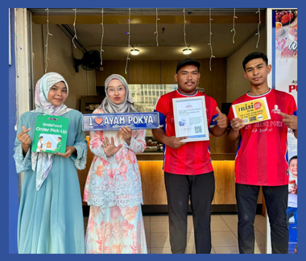
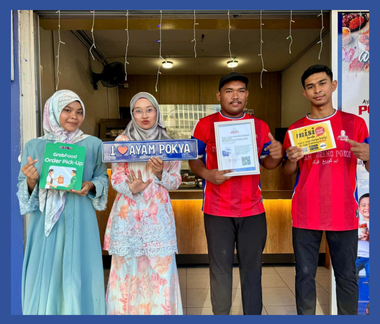
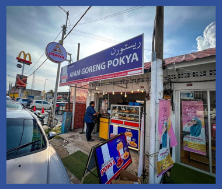
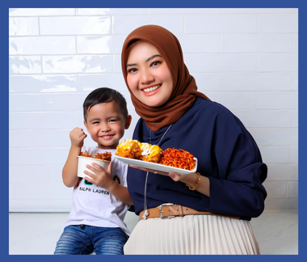

2016
Pokya Ayam Goreng was founded. It started as a small.
Pokya Ayam Goreng was founded. It started as a small.
The business expanded and opened its first restaurant in Kota Bharu.
Pokya Ayam Goreng introduced its signature recipe, which became an instant hit.

The brand expanded to other states in Malaysia, gaining nationwide popularity.
